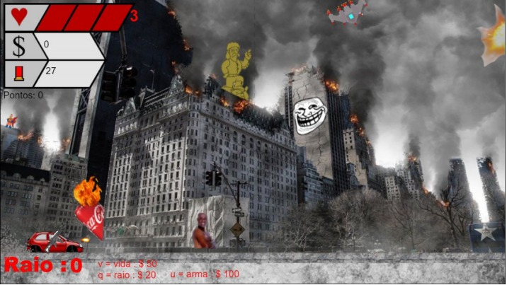
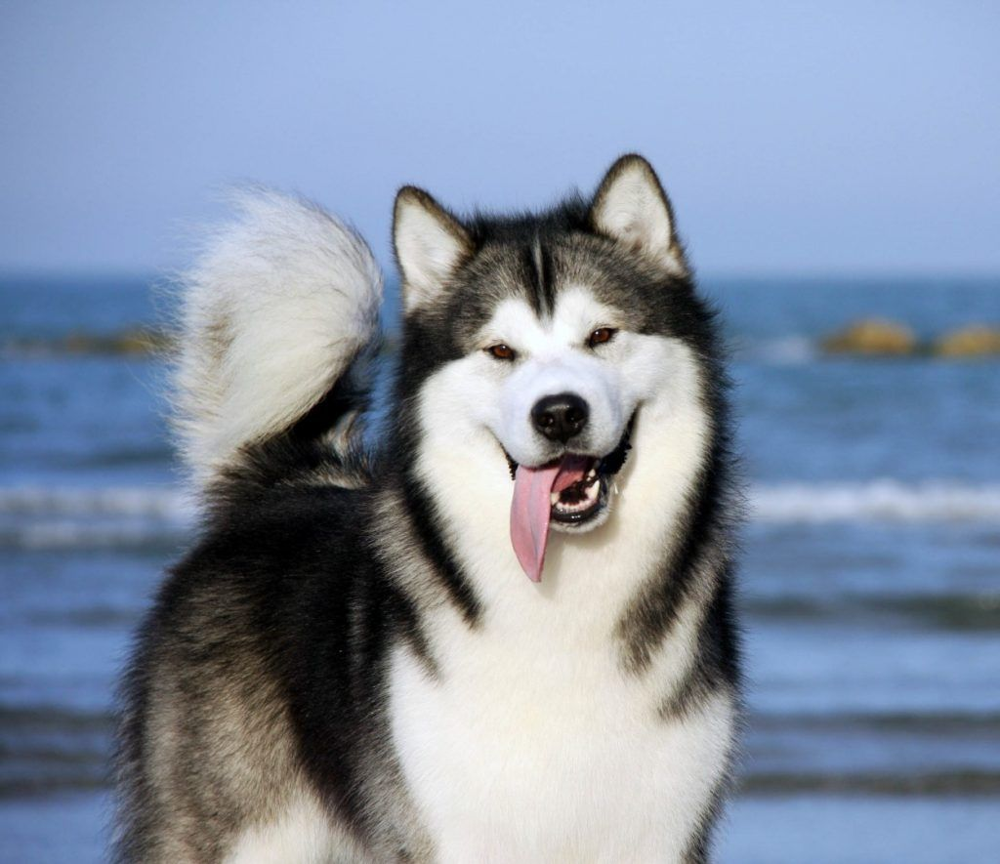
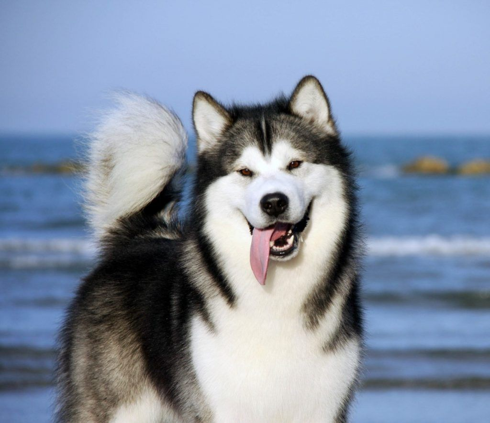

- Experiência Criativa
- Primeiro projeto: Construct 
- Sefungo projeto: Aplicação Multimídia Processing
- terceiro projeto: Batalha Naval Windowns Forms
- Filosofia
- Primeiro Projeto: Startup
- Segundo Projeto: Entrevistas
- Terceiro Projeto: Planejamento universitário
- Raciocínio Algorítmico
- Primeiro Projeto: TDEE'S
- Segundo Projeto: Listas de exercícios
- Terceiro Projeto: O resto
- Modelagem de Fenômenos Físicos
- Descoberta e Evolucão da Computação


 


Esse projeto consistiu em perguntas pessoais sobre planos futuros, planejamento de carreira, etc.

Foi pedido para que entrevistássemos um aluno quase terminando o curso e um profissional da área

Foi requisitado um planejamento universitário e questionado nossos objetivos na universidade e no curso


Nesta matéria não foi realizado nenhum projeto, todas as aulas foram realizadas em um notebook do Jupyter.
O único TDE pedido foi a entrega do do arquivo contendo as aulas.


Todos os projetos dessa matéria se resumiram a responder questões sobre a computação, seus profissionais e suas áreas.
De tempos em tempos era pedido a formulação de algumas questões, em seguida as questões eram divididas entre os alunos para que eles respondessem as questões criadas pelos colegas.